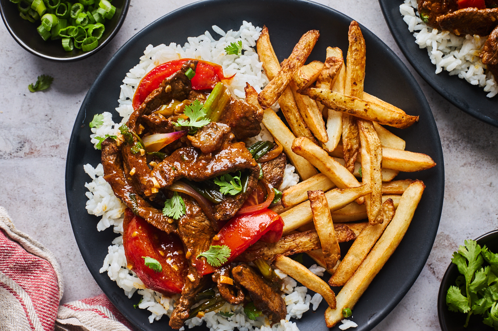

LOMO SALTADO

INGREDIENTS
- 1 lb of beef sirloin, sliced into thin strips
- 2 red onions, sliced into thin wedges
- 2-3 Roma tomatoes, sliced into wedges
- 1-2 hot peppers (aji amarillo or jalapeno), thinly sliced
- 1/4 cup of soy sauce
- 2-3 cloves of garlic, minced
- 1/4 cup of red wine vinegar
- 1/4 cup of vegetable oil
- Salt and pepper to taste
- French fries
- Cooked rice
INSTRUCTIONS
- In a large bowl, marinate the beef strips with soy sauce, garlic, salt, and pepper for at least 30 minutes.
- Heat the vegetable oil in a large skillet or wok over high heat.
- Add the beef strips to the skillet and stir-fry for 2-3 minutes or until browned.
- Remove the beef from the skillet and set it aside on a plate.
- Add the onions, tomatoes, and hot peppers to the same skillet and stir-fry for 2-3 minutes or until slightly softened.
- Add the beef back to the skillet, along with any juices that have accumulated on the plate, and stir-fry for
another minute.
- Pour the red wine vinegar over the beef mixture and stir well.
- Serve the Lomo Saltado with a side of french fries and cooked rice.
- Enjoy your delicious Lomo Saltado!